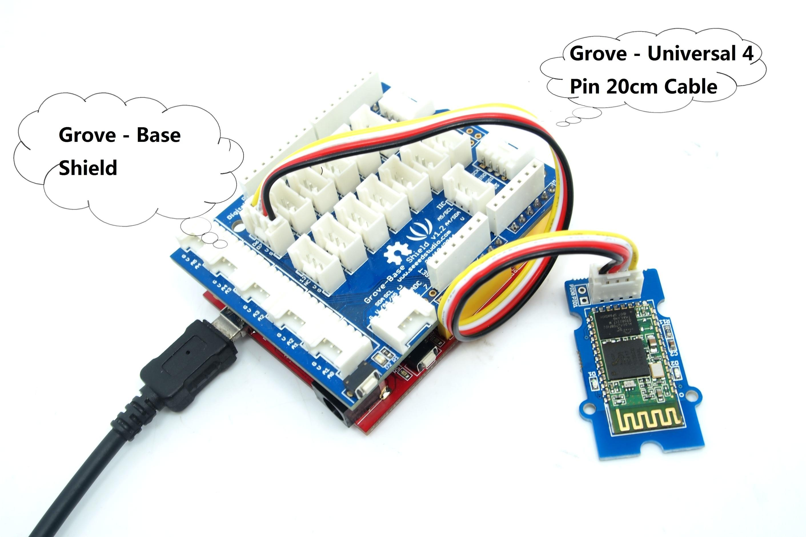
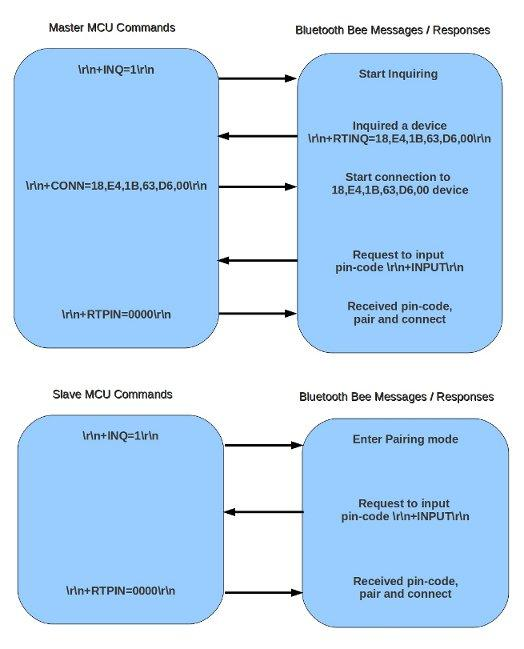

Grove - Serial Bluetooth is an easy to use module compatible with the existing Grove Base Shield, and designed for transparent wireless serial connection setup. The serial port Bluetooth module is fully qualified Bluetooth V2.0+EDR(Enhanced Data Rate) 2Mbps Modulation with complete 2.4GHz radio transceiver and baseband. It uses CSR Bluecore 04-External single chip Bluetooth system with CMOS technology and with AFH(Adaptive Frequency Hopping Feature). It has the smallest footprint of 12.7mm x 27mm. Hope it will simplify your overall design/development cycle.
Model:WLS31746P
In this library we packed are two demos for your project to work in Master mode and Slave mode.
Two Bluetooth modules work as shown below:

Connect the module to D6 Port of Grove - Base Shield:

Install the library in the "Resources" section. If you want to run the project in Master mode, find the demo by the path: File - Examples - Bluetooth_demo_code - Master. And you can find the demo for Slave mode in the same path.
When the Grove - Serial Bluetooth module is in pairing status, the green and red LED links in interval. If connection succeeds, the green LED will blink every 2s. If connection fails, the red LED will blink every 0.5s.

1. Set working MODE
| \r\n+STWMOD=0\r\n | Set device working mode as client (slave). Save and Rest. |
| \r\n+STWMOD=1\r\n | Set device working mode as server (master). Save and Rest. |
Note: \r\n is necessary for operation and the value of are 0x0D 0x0A in Hex. \r and \n represent carriage-return and line-feed(or next line),
2.Set BAUDRATE
| \r\n+STBD=115200\r\n | Set baudrate 115200. Save and Rest. |
| Supported baudrate: 9600, 19200,38400,57600,115200,230400,460800. | |
3. Set Device NAME
| \r\n+STNA=abcdefg\r\n | Set device name as “abcdefg”. Save and Rest. |
4. Auto-connect the last paired device on power
| \r\n+STAUTO=0\r\n | Auto-connect forbidden. Save and Rest. |
| \r\n+STAUTO=1\r\n | Permit Auto-connect. Save and Rest. |
5. Permit Paired device to connect me
| \r\n+STOAUT=0\r\n | Forbidden. Save and Rest. |
| \r\n+STOAUT=1\r\n | Permit. Save and Rest. |
6. Set PINCODE
| \r\n+STPIN=2222\r\n | Set pincode “2222”, Save and Rest. |
7. Delete PINCODE(input PINCODE by MCU)
| \r\n+DLPIN\r\n | Delete pincode. Save and Rest. |
8. Read local ADDRESS CODE
| \r\n+RTADDR\r\n | Return address of the device. |
9. Auto-reconnecting when master device is beyond the valid range (slave device will auto-reconnect in 30 min when it is beyond the valid range)
| \r\n+LOSSRECONN=0\r\n | Forbid auto-reconnecting. |
| \r\n+LOSSRECONN=1\r\n | Permit auto-reconnecting. |
1. Inquire
| a) Master | |
| \r\n+INQ=0\r\n | Stop Inquiring |
| \r\n+INQ=1\r\n | Begin/Restart Inquiring |
| b) Slave | |
| \r\n+INQ=0\r\n | Disable been inquired |
| \r\n+INQ=1\r\n | Enable been inquired |
When +INQ=1 command is successful, the red and green LEDS blink alternatively.
2. Bluetooth module returns inquiring result
| \r\n+RTINQ=aa,bb,cc,dd,ee,ff;name\r\n | Serial Bluetooth device with the address “aa,bb,cc,dd,ee,ff” and the name “name” is inquired |
3. Connect device
| \r\n+CONN=aa,bb,cc,dd,ee,ff\r\n | Connect to a device with address of "aa,bb,cc,dd,ee,ff” |
4. Bluetooth module requests inputting PINCODE
\r\n+INPIN\r\n
5. Input PINCODE
| \r\n+RTPIN=code\r\n | |
| Example: RTPIN=0000 | Input PINCODE which is four zero |
6. Disconnect device Pulling PIO0 high will disconnect current working Bluetooth device.
7. Return status \r\n+BTSTA:xx\r\n
xx status:
(Note: This is not a command, but the information returned from the module after every command)
Copyright (c) 2008-2016 Seeed Development Limited (www.seeedstudio.com / www.seeed.cc)